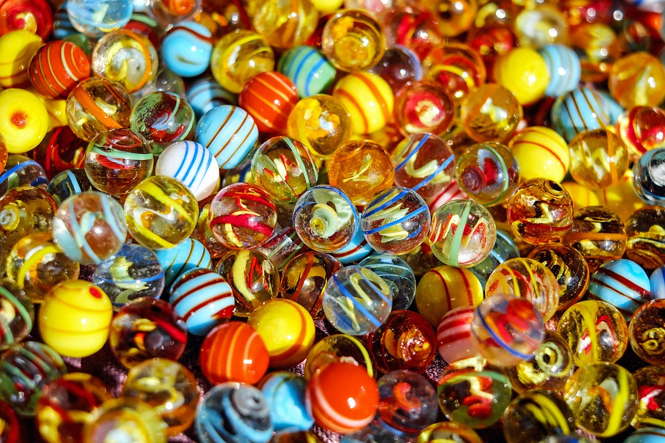

Misión
Brindamos juguetes elaborados con materiales naturales como madera y lana para facilitar en el niño situaciones de aprendizaje, que lo lleven a conocer, comprender y transformar el mundo que lo rodea otorgando más que un juguete una experiencia para él y toda su familia.
